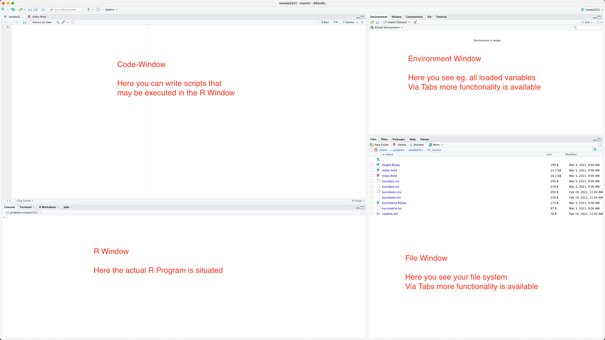

2+2[1] 42^2[1] 4When we first start R Studio, we see a screen divided into several windows. On the left-hand side, directly after the start, we are greeted by the large R window, the Console. This is where the actual R programme is located. On the right, there are windows that provide further helpful functions. In the upper area we have the window in which we can see the working environment. On the one hand, there is the actual environment, marked by the tab ‘Environment’. Next to this, perhaps of interest to us at the moment, is the ‘History’ tab, in which we can see the sequence of commands entered so far. The file manager is located in the lower right-hand corner. Other tabs contain information about diagrams (plots), packages and a window in which we can use the R help system.
One important window is still missing: the code or script window. This only appears when we open a new R file. To do this, either click on the plus symbol at the top left or select ‘File -> New File’ from the menu. This opens another window which is placed in the top left by default and in which you enter your programme code for the analyses. This window functions as a normal text editor window, i.e. if you press Enter here, the text is not directly executed, but a new line is created. To actually execute a command, you can either click on the Run symbol in the upper area or use the keyboard shortcut Control Enter.

After R is started, you end on the prompt.
>This prompt expects your commands. It can be used to directly enter commands or conduct calculations like with a normal calculator. We mainly will not use R in this way.Most of the real work is done using the script window. But we can start trying out our directly using the console window.
As R is an statistical program, of course it can do calculations. We can try that out by entering some basic calculations using the well-known mathematical operators.
2+2[1] 42^2[1] 4If we want to enter multiple commands in one line, Either in the console or in the script window, we can separate them by using a semicolon. Each part divided by a; is treated like an individual command and is executed before the next in turn is then executed.
(1 - 2) * 3; 1 - 2 * 3[1] -3[1] -5Beside the basic calculations R also offer us the possibility to do more complex calculations. Here we start using functions in R for the first time. Functions are commands that produce a certain output, most of the time requiring a certain input.The input usually is given by writing it in between the rounds brackets that distinguish a function call from a variable which we will see later. Functions can sometimes take more than one parameter these are then divided by, within the round brackets.
In the following example in the first line of “we calculate the square root, In the second example the natural logarithm of 10. If we would like to calculate the living room to the base of 10, we have to specify that using a second parameter.
sqrt(2) #square root[1] 1.414214log(10) #logarith base e[1] 2.302585log(10, 10) #logarith base 10, like log(10, base=10)[1] 1There is a specific function for getting help. Not surprisingly this function is called help. It takes as a parameter the name of the function for which you would like to get some information.
Call of the help function:
help(sqrt)Like it even simpler? You can also use the ‘?’ For getting help instead of writing the function name ‘help’. The name of the function for which you would like to have help it’s written after that ‘?’ .
? sqrtYou can also search within the help files of R. Research capabilities are a limited only a fulltext search is conducted and you will not get any semantic relevant results. This means that if you would like to search for a specific topic, you probably already should know basically what you are searching for. More complicated searches probably better take place in the Internet. There are plenty of sites where you could get help or explanation how certain analyses are conducted.
Searching the help:
help.search('logarithm')A very essential concept in R is the concept of a variable. Variable can be seen as a kind of labelled drawer or replacement for an actual value that can be changed. It can become quite handy if for example you are writing a script or analyses, In which certain values might be changed in individual runs. Here you can define a replacement for the actual value that is the variable and specify the content of the variable for example in the beginning of the analyses. Here it can easily be changed if necessary.
Setting the value of a variable is also called assignment. If we assign a value to a variable are is not reporting any message back. If we want to see the content of the variable we have to enter this variable itself without any other additions.
There are some data shipped with our. We will talk about datasets later. Some inbuilt constants are the letters of the alphabet, the names of the month and also the value of pi.
x <- 2 # no message will be given back
x[1] 2There are some data shipped with our. We will talk about datasets later. Some inbuilt constants are the letters of the alphabet, the names of the month and also the value of pi.
pi # build in variable[1] 3.141593When selecting variable names you’re quite free to choose. It is necessary, that the name of the variable starts with the letter. You should avoid using mathematical signs, because they could be interpreted as actual calculation. This means, you should not use the minus sign, but you’re perfectly free to use the underscore “_” or the dot “.”.
There are different options for the assignment sign in our. The traditional one is the arrow composed of a ‘smaller than’ sign and minus sign. Most other programming languages and now also our takes the = as an assignment. What you would like to use as a matter of taste. Personally I’d like the Aero more because it is more speaking and more clear.
Classic assignment symbol in R is the arrow. Also possible:
x=2Both are possible.
And this is helpful to get an overview about which variables we have already Defined. For this in our studio in the right hand area there is the environment window. If we want to get an overview about the assigned variables in our itself, we can use the command ls(). Currently there is only one variable in our environment. That is the variable X that we just assigned.
Display of already uses variables:
ls()[1] "x"Sometimes it might be helpful to get rid of one of the variables. To do this you can use the rm() command. This stands for remove. The name of the variable that has to be deleted is given within the round brackets ending the function call. If we after the removal of a variable get a listing of the variable environment again the variable should have gone.
Delete a variable:
rm(x) # no message will be given back
ls()character(0)Already have been said a variable can be used instead of an actual value. To do this we simply replace the use of the value with the name of the variable. For example if we want to use a variable when we calculate 2×2 we can at first assign 2 to one Variable and use it instead of actually writing to in our calculation. An important concept is also that the result of the calculation can also be assigned to a variable. With this we can chain analyses together and use the output of one of the functions as the input of the next function. In our example we assign to to the variable x, then we double its value and assign the results to the variable y. The result of this calculation is then used to calculate the square roots using the function sqrt().
Calculations with variables:
x <- 2
y <- 2 * x
z <- sqrt(y) # no message will be given backNo using the function ls(), We can’t get an overview over our current environment. We should see now the 3 variable that we have created. Additionally if we inspect the individual variables, we shall see that y contains the value of four while z contains the value of two.
ls()[1] "x" "y" "z"y[1] 4z[1] 2Given is a circle with the radius r=5. Calculate the diameter d (2 \* r), the circumference u (2 \* π \* r) and the area a (π \* r^2).
Add area a and circumference u, assign the result to the variable v and delete u and a.r <- 5
d <- 2 * r
u <- 2 * pi * r
a <- pi * r^2
v <- a + u
rm(u)
rm(a)There are four main data types in R: Scalars, vectors, matrices, data frames.
Scalar are individual values. This can be numbers text strings or true/false values. The essential characteristic is that it is only one value that is represented by a scalar.
Examples of Scalar are all those variables that we used until now.
pi[1] 3.141593All these variables stored only one value at the time.
A vector is a variable that holds multiple values at the time in a one-dimensional data structure. You can’t imagine it as a kind of list where every item off the list again is a scalar.
We have already seen an example of a vector: the result of the listing of the variables, resulting from the command ls() represents a vector, where every position in this vector holds a scalar information, that is the name of the variable.
ls()[1] "d" "r" "v" "x" "y" "z"A vector is a one-dimensional data structure. If we add more dimensions to this idea, we end up with a Matrix. In the simplest implementation you can imagine a matrix as a table with rows and columns. That we have rows and columns represents the two-dimensionality of this data structure. Matrices with more dimensions are easily implementable, although our imagination probably will stop with three dimensions. Most of the time we will use two-dimensional matrices.
As with vectors, each element in a matrix represents a scalar value. One of the specific features of the data type matrix in R is, that all values have to be of the same kind. That means with in one and the same metrics, there can only be numbers, characters, or true and false values at once. We can’t mix these types of information in a matrix, which is the difference from the next data structure that we will learn.
There are also inbuilt matrices in R, for example are matrix holding the transfer rates between different European currencies. Of course these are restoring values and not updated online all the time
euro.cross ATS BEF DEM ESP FIM FRF
ATS 1.000000000 2.93161486 0.142135709 12.0917422 0.432093050 0.476702543
BEF 0.341108927 1.00000000 0.048483759 4.1246012 0.147390797 0.162607493
DEM 7.035529673 20.62546336 1.000000000 85.0718109 3.040003477 3.353854885
ESP 0.082701069 0.24244768 0.011754775 1.0000000 0.035734557 0.039423810
FIM 2.314316324 6.78468413 0.328946992 27.9841163 1.000000000 1.103240477
FRF 2.097744212 6.14977811 0.298164361 25.3653822 0.906420695 1.000000000
IEP 17.471976881 51.22110711 2.483391826 211.2666399 7.549519785 8.328935807
ITL 0.007106602 0.02083382 0.001010102 0.0859312 0.003070713 0.003387735
LUF 0.341108927 1.00000000 0.048483759 4.1246012 0.147390797 0.162607493
NLG 6.244151907 18.30544854 0.887516960 75.5026750 2.698054644 2.976603092
PTE 0.068636087 0.20121457 0.009755639 0.8299299 0.029657176 0.032718997
IEP ITL LUF NLG PTE
ATS 0.0572345080 140.714229 2.93161486 0.160149851 14.5695951
BEF 0.0195232016 47.998880 1.00000000 0.054628544 4.9698190
DEM 0.4026750791 989.999131 20.62546336 1.126739032 102.5048189
ESP 0.0047333550 11.637217 0.24244768 0.013244564 1.2049211
FIM 0.1324587561 325.657236 6.78468413 0.370637415 33.7186519
FRF 0.1200633578 295.182459 6.14977811 0.335953424 30.5632839
IEP 1.0000000000 2458.555749 51.22110711 2.798134501 254.5596294
ITL 0.0004067429 1.000000 0.02083382 0.001138121 0.1035403
LUF 0.0195232016 47.998880 1.00000000 0.054628544 4.9698190
NLG 0.3573809621 878.641019 18.30544854 1.000000000 90.9747653
PTE 0.0039283527 9.658074 0.20121457 0.010992059 1.0000000You can see that we have rows and columns here and both the rows and columns have names. In this example row and column names are the same because we have a special kind of matrix. But in general the names of the rows and columns can differ from each other. Matrices are specific data types with which you can conduct matrix algebra, which is a specific branch of mathematics that is also used in statistics. We will not deal with this very much. That’s why we most of the time will probably work more with the next data type.
The fourth of our data types is the data type data.frame. Similar to the matrix, this datatype represents a more than one dimensional data storage unit. Different from the matrix, in data frames values of different kinds can be stored. More specifically the different columns of the data frame can differ in respect of the contains data type. That means we can combine columns that have character values with columns that hold numeric values.
Tables in data frames are usually structured in a specific way: the rules usually hold the item off on investigation or the observations, while the columns usually holds the different features or variables of interest.
One example of such a data frame that is inbuilt in our is the data frame mtcars. This data frame contains the technical details of different cars. Also this is more a historical dataset.
mtcars mpg cyl disp hp drat wt qsec vs am gear carb
Mazda RX4 21.0 6 160.0 110 3.90 2.620 16.46 0 1 4 4
Mazda RX4 Wag 21.0 6 160.0 110 3.90 2.875 17.02 0 1 4 4
Datsun 710 22.8 4 108.0 93 3.85 2.320 18.61 1 1 4 1
Hornet 4 Drive 21.4 6 258.0 110 3.08 3.215 19.44 1 0 3 1
Hornet Sportabout 18.7 8 360.0 175 3.15 3.440 17.02 0 0 3 2
Valiant 18.1 6 225.0 105 2.76 3.460 20.22 1 0 3 1
Duster 360 14.3 8 360.0 245 3.21 3.570 15.84 0 0 3 4
Merc 240D 24.4 4 146.7 62 3.69 3.190 20.00 1 0 4 2
Merc 230 22.8 4 140.8 95 3.92 3.150 22.90 1 0 4 2
Merc 280 19.2 6 167.6 123 3.92 3.440 18.30 1 0 4 4
Merc 280C 17.8 6 167.6 123 3.92 3.440 18.90 1 0 4 4
Merc 450SE 16.4 8 275.8 180 3.07 4.070 17.40 0 0 3 3
Merc 450SL 17.3 8 275.8 180 3.07 3.730 17.60 0 0 3 3
Merc 450SLC 15.2 8 275.8 180 3.07 3.780 18.00 0 0 3 3
Cadillac Fleetwood 10.4 8 472.0 205 2.93 5.250 17.98 0 0 3 4
Lincoln Continental 10.4 8 460.0 215 3.00 5.424 17.82 0 0 3 4
Chrysler Imperial 14.7 8 440.0 230 3.23 5.345 17.42 0 0 3 4
Fiat 128 32.4 4 78.7 66 4.08 2.200 19.47 1 1 4 1
Honda Civic 30.4 4 75.7 52 4.93 1.615 18.52 1 1 4 2
Toyota Corolla 33.9 4 71.1 65 4.22 1.835 19.90 1 1 4 1
Toyota Corona 21.5 4 120.1 97 3.70 2.465 20.01 1 0 3 1
Dodge Challenger 15.5 8 318.0 150 2.76 3.520 16.87 0 0 3 2
AMC Javelin 15.2 8 304.0 150 3.15 3.435 17.30 0 0 3 2
Camaro Z28 13.3 8 350.0 245 3.73 3.840 15.41 0 0 3 4
Pontiac Firebird 19.2 8 400.0 175 3.08 3.845 17.05 0 0 3 2
Fiat X1-9 27.3 4 79.0 66 4.08 1.935 18.90 1 1 4 1
Porsche 914-2 26.0 4 120.3 91 4.43 2.140 16.70 0 1 5 2
Lotus Europa 30.4 4 95.1 113 3.77 1.513 16.90 1 1 5 2
Ford Pantera L 15.8 8 351.0 264 4.22 3.170 14.50 0 1 5 4
Ferrari Dino 19.7 6 145.0 175 3.62 2.770 15.50 0 1 5 6
Maserati Bora 15.0 8 301.0 335 3.54 3.570 14.60 0 1 5 8
Volvo 142E 21.4 4 121.0 109 4.11 2.780 18.60 1 1 4 2You can see, that the real names contains the names of the different cars, identifying them. The column names contains different measurements or information is, there are specific for the individual cars. The individual values identified by row and column then holds to specific values that are unique for this individual item or car.
Data frames are the data type that we will use most of the time, especially if we import data from other sources. How we can do that, will be shown subsequently. But at first we have to make sure, that we get our data from the right location on our computer. For that we need to concept of the working directory.
Historically, R is a software that has always been run within the console. Therefore it expects all its inputs from a specific folder on your computer, the working directory. Also, if any output is written to the disk on your computer, this also will take place in the specified working directory.
Of course this working directory is not fixed, but you can specify that according to your specific workflow. At first we can use the command getwd() to see where on the computer I will working direct with currently is located.
getwd()Then we can use the command setwd("your/working/directory") to set this working directory to a specific folder of your computer.
setwd("U:\R") # or something elseHow specific folder has to be addressed, depends on the operating system. While Linux and macOS computers treat directory name is more or less the same, in Windows computers the path is prepared by the volume letter. With RStudio, there are different other options how are you can use the graphical user interface to specify the working directory. This might be more convenient than typing the path, especially if you are not used to it. You will find options for this in the files window of our studio, under the icon ‘More’, or in the main menu under the item ‘session’. Change the path according to your needs. Also you can make it a habit to check in the beginning of every R session, what do you work in directory is and if it is correctly specified.
In the reminder of the chapter we will need some files that can be downloaded using the following links:
Please save these files to the directory that you have defined as your working directory. In the following the used example will assume that the files are accessible directly, as they should be if they are placed in the working directory.
Remember:
getwd()
setwd("my/location/of/my/working/directory")Data can be imported into R from different formats and sources. The most straightforward version is to directly scan a text file and read it into an R variable. For directly reading in a file we can use the function scan(). The file kursmatrix.txt is a simple text file in which ages and bodies sizes of individuals are listed consecutively. Scan reads in each item and translate it to a position in a vector.
scan("kursmatrix.txt") [1] 39 34 23 38 23 21 23 31 25 31 24 23 23 39 21 181 170 185 163
[20] 175 163 162 172 172 180 187 158 184 156 168If we, for example, want to turn this factor into a two-dimensional structure, like a matrix, we can use the command matrix to define such a structure and then use as an input the scanned content of the file. For the command matrix(), One of its parameters is the content that should be turned into a matrix, the second parameter is the number of columns that this matrix should have in end.
kursmatrix <- matrix(scan("kursmatrix.txt"),ncol=2)The result is a two-dimensional structure, with two columns, in which body height and age are listed in different columns.
kursmatrix [,1] [,2]
[1,] 39 181
[2,] 34 170
[3,] 23 185
[4,] 38 163
[5,] 23 175
[6,] 21 163
[7,] 23 162
[8,] 31 172
[9,] 25 172
[10,] 31 180
[11,] 24 187
[12,] 23 158
[13,] 23 184
[14,] 39 156
[15,] 21 168The file kursdata.txt contains a more complicated data structure. Here we have information is of different kinds, for example strings, but also numeric values. This kind of data can be imported into an data frame. The most general function to import table data is the function read.table().
kursdata <- read.table("kursdata.txt")One of the most widely used text file for exchange of numerical and other data are those in the CSV format. This format comes into flavours, Differentiated by the character that separates the columns. The original CSV format has a column separator “,” and a decimal separator using “.”. In European and other countries the “,” it’s often used as decimal separator. Therefore also a CSV2 format exists. Here the column separator is a “;”, while the decimal separator is, “. In Switzerland most of the time we will probably use the CSV2 format. In this format we have the same data available like we have in the kursdata.txt, the file is now called kursdata.csv.
kursdata <- read.csv2("kursdata.csv")
kursdata X age height sex
1 Matthias 39 181 m
2 Jannick 34 170 m
3 Nicolas 23 185 m
4 Silvia 38 163 f
5 Till 23 175 m
6 Anna 21 163 f
7 Ilaria 23 162 f
8 Sarah 31 172 f
9 Clara 25 172 f
10 Alain 31 180 m
11 Adrian 24 187 m
12 Marlen 23 158 f
13 Michael 23 184 m
14 Helena 39 156 f
15 Nephele 21 168 fIf we read in the data like this, you will realise, that there is a numeric naming, that is automatically given by R. If the dataset already consists of a unique identifier, that is a value, that is not repeated within the whole dataset, and that uniquely identify every individual item of the dataset, this can be used instead of the numeric identifier. This unifier of individual items is called row names in R. So if we specify in the read.CSV2 command, that we want to use for example the first column as row names, we can do it like this.
kursdaten <- read.csv2("kursdata.csv",row.names = 1)
kursdaten age height sex
Matthias 39 181 m
Jannick 34 170 m
Nicolas 23 185 m
Silvia 38 163 f
Till 23 175 m
Anna 21 163 f
Ilaria 23 162 f
Sarah 31 172 f
Clara 25 172 f
Alain 31 180 m
Adrian 24 187 m
Marlen 23 158 f
Michael 23 184 m
Helena 39 156 f
Nephele 21 168 fNow we know how we can assign more complicated data sets two variables by loading them from the file system. Sometimes, it might also be necessary, to directly assign more than one value to a variable. Let’s start with the example of a vector. A vector is created in R using the command c(). This ‘c’ stands for combine, and enables us to combine multiple values to be assigned to a variable, but also for different purposes.
Let’s assume that we would like to make a vector of different Bronze Age sites. We assign the result to a variable called places.
places <- c("Leubingen", "Melz", "Bruszczewo")As in every other situation, in R actual value can be replaced with a variable. Also when we combine values we can not only combine actual values, in this case strings, but we also could use variables and combined them with other variables. To demonstrate that let’s make another vector of side categories that we call categories.
categories <- c("burial", "depot", "settlement")
categories[1] "burial" "depot" "settlement"Now we can combine these two factors into one.
c(places, categories)[1] "Leubingen" "Melz" "Bruszczewo" "burial" "depot"
[6] "settlement"We already learnt to concept of row names and column names. Also places in a vector can have a specific identifier, the name. Since vectors do not have rows and columns, this feature is called only called ‘name’. We can use another vector to assign names, or we could directly enter names for the individual positions. In this case we use our category vector as base vector and the sites in the places vector as identifiers.
names(categories) <- places
categories Leubingen Melz Bruszczewo
"burial" "depot" "settlement" The result is a vector, in which every position has the name of the site is unique identifier, and where the values are the site categories for this specific archaeological sites.
Also variables with more complex content can, of course, be used in calculations and other functions. Due to their nature, and the fact that they contain more than one value, this of course changes the range of functions that can be applied to them. I will demonstrate that with a reduced version of our data. We will use only a vector of the body height of the individuals.
For this we explore a way of loading data into R. This time we use the need to data storage option of R. This format is called ‘RData’, and different from other loading or saving, we do not have to specify a variable name. In this case the variable is stored with its content, and if we load this dataset again, the variable is restored with the same name.
load("height.RData")
heightMatthias Jannick Nicolas Silvia Till Anna Ilaria Sarah
181 170 185 163 175 163 162 172
Clara Alain Adrian Marlen Michael Helena Nephele
172 180 187 158 184 156 168 Now we can use this vector that is assigned to the variable name height, to demonstrate some functions that make calculations over all the values that are stored in this vector. The first step probably comes to mind, is to sum up all the values. This can be done in R own using the function sum().
# Sum:
sum(height)[1] 2576We can also count the number of values in the vector. The command for this is length().
# Count:
length(height)[1] 15If we have the number of cases, and to some of their individual values, we easily can calculate the arithmetic mean.
# Mean:
sum(height)/length(height)[1] 171.7333Since this is a very essential statistical value or parameter, of course there exists a specific command for this in R. There is no big surprise that this function is called mean().
# Or more convenient:
mean(height)[1] 171.7333Other possible functions might for example be related to the order and the extremes of the values within our dataset. We can sort the dataset according to the values, using the function sort(). In case of numerical values, the items will be sorted according to the numerical order. In case of characters, the items will be sorted according to the character. Our height data on numerical, therefore we will get them sorted from the smallest to the largest person.
# sort:
sort(height) Helena Marlen Ilaria Silvia Anna Nephele Jannick Sarah
156 158 162 163 163 168 170 172
Clara Till Alain Matthias Michael Nicolas Adrian
172 175 180 181 184 185 187 Immediately we can identify the smallest and the largest person. But we can also explicitly get the values using the function min() for minimum, and max() for maximum. The function range() gives both values at the same time.
# minimum:
min(height)[1] 156# maximum:
max(height)[1] 187# Or both at the same time:
range(height)[1] 156 187Not only can we use functions on more complex variables like vectors, we also can do calculations. If, for example, we combine a scalar value With a mathematical expression with a vector, the calculation is done at every position of this vector. For example, if we want our height vector in metre, we have to divided by 100. We can directly apply this calculation to the whole variable, and the results will change every individual position in that vector. That means, we divide the variable by 100, and all the items in the variable are then divided by 100, causing every value to be in meter instead of centimeter.
height.in.m <- height/100
height.in.mMatthias Jannick Nicolas Silvia Till Anna Ilaria Sarah
1.81 1.70 1.85 1.63 1.75 1.63 1.62 1.72
Clara Alain Adrian Marlen Michael Helena Nephele
1.72 1.80 1.87 1.58 1.84 1.56 1.68 The case is different if we combine to vectors with a mathematical expression. In this case, the first value of the first vector is combined with the first value of the second vector.The second value of the first vector is then combined with the second value of the second vector, and so forth.
test<-c(1,2,3,4,5,6,7,8,9,10,11,12,13,14,15)
height.in.m + testMatthias Jannick Nicolas Silvia Till Anna Ilaria Sarah
2.81 3.70 4.85 5.63 6.75 7.63 8.62 9.72
Clara Alain Adrian Marlen Michael Helena Nephele
10.72 11.80 12.87 13.58 14.84 15.56 16.68 In case, that we have different number of positions in the individual factors vectors, the short one is “recycled”. That means, it starts again from the beginning. You can try that out yourself, if you take the example above and remove some items from the test vector.
An excavation produced the following numbers of flint artefacts:
| flakes | blades | cores | debris |
| ------ | ------ | ----- | ------ |
| 506 | 104 | 30 | 267 |
Assign the values to a named vector, calculate the proportion of the artefacts and sort the vector according to their percentage
During the data collection on box with artefacts was missing, the following numbers has to be added to the vector:
| flakes | blades | cores | debris |
| ------ | ------ | ----- | ------ |
| 52 | 24 | 15 | 83 |
Moreover were 10 items each artefact type missing. Make a vector for the box, add it and the 10 missing to the original data and repeat the calculations.artefacts <- c(506, 104, 30, 267)
names(artefacts) <- c("flakes", "blades", "cores", "debris")
prop <- artefacts/sum(artefacts)
sort(prop) cores blades debris flakes
0.03307607 0.11466373 0.29437707 0.55788313 missing_box <- c(52,24,15,83)
all_artefacts <- artefacts + missing_box + 10
prop <- all_artefacts/sum(all_artefacts)
sort(prop) cores blades debris flakes
0.04906334 0.12310437 0.32114184 0.50669045 Variant:
We also could have over written the content of the artefact variable with the new values including the missing box and the 10 additional items. In that case the court would look like this:
artefacts <- artefacts + missing_box + 10
prop <- artefacts/sum(artefacts)
sort(prop) cores blades debris flakes
0.04906334 0.12310437 0.32114184 0.50669045 You see, that artefact is twice present in the first line. This is possible, because the right-hand side of the assignment is evaluated first, and then the result is assigned to the actual variable.
This technique can also be used in actual scripts if you don’t need the intermediate values of the variable. It can become quite handy, to reduce the amount of variables and doing names. But you always will have to take care: you lose the intermediate values! So if you have to repeat any step in between, or later you would need some of the intermediate values you will not have them.
Now we have seen, how we can produce vectors ourselves, and how we can use them in calculations. There are some specific vectors, either consisting of the repetition of an individual value, or sequences of values. There are some inbuilt functions in R that can help you producing these kinds of vectors fast.
Let’s start with a simple sequence. Let’s assume, that we need the values from 1 to 10. We can produce such a simple sequence rather easily like this:
1:10 [1] 1 2 3 4 5 6 7 8 9 10But also more complicated sequences are possible. For this we need an explicit function call for the function seq(). This command takes several parametres, the first one is the starting value, the second one the end value. You can also define the increment using the parameter by, or the desired length of the resulting vector, using the power meter length.
seq(1,10,by=2)[1] 1 3 5 7 9seq(1,20,length=5)[1] 1.00 5.75 10.50 15.25 20.00You can check out other options and use cases indeed help documentation for this command.
The other mentioned option, the repetition, works for letters as well as for numeric values. The command here is rep(). Here, the first parameter is the value that should be repeated. This value can also be a vector. The second para meter is the number of times, that this value should be repeated. Also hear further options can be found in the documentation of the command.
rep(1,10) [1] 1 1 1 1 1 1 1 1 1 1rep(1:3,3)[1] 1 2 3 1 2 3 1 2 3rep(c("Anton","Berta","Claudius"),3)[1] "Anton" "Berta" "Claudius" "Anton" "Berta" "Claudius" "Anton"
[8] "Berta" "Claudius"And important possibility is to access data with in such a complex structure like for example a vector. By convention, for accessing data in R, square brackets are used. Indicates of a one-dimensional data structure, within the brackets you can give the position of the item that you would like to access. This can be an individual number, a vector of numbers, Or, by using the minus sign, you can also exclude eighter individual value or a range of values. Here, sequences can become very handy.
height[1]Matthias
181 height[5]Till
175 height[1:3]Matthias Jannick Nicolas
181 170 185 height[-(1:3)] Silvia Till Anna Ilaria Sarah Clara Alain Adrian Marlen Michael
163 175 163 162 172 172 180 187 158 184
Helena Nephele
156 168 If we have a named vector, like for example with our heigth data, these positions have also and unique identifier. In that case, we can also use the unique identifier, to access a specific position in our data storage vector.
height["Clara"]Clara
172 This data access is two ways: not only can we get the values at a specific position, but we can also change the values, given that we indicate a specific position in the vector. In the following example at first the content of the vector height is shown, then we change the entry in the first value, and you can inspect the effect.
heightMatthias Jannick Nicolas Silvia Till Anna Ilaria Sarah
181 170 185 163 175 163 162 172
Clara Alain Adrian Marlen Michael Helena Nephele
172 180 187 158 184 156 168 height[1] <- 168
heightMatthias Jannick Nicolas Silvia Till Anna Ilaria Sarah
168 170 185 163 175 163 162 172
Clara Alain Adrian Marlen Michael Helena Nephele
172 180 187 158 184 156 168 Of course the same is true for the access by name.
height["Till"] <- 181
heightMatthias Jannick Nicolas Silvia Till Anna Ilaria Sarah
168 170 185 163 181 163 162 172
Clara Alain Adrian Marlen Michael Helena Nephele
172 180 187 158 184 156 168 Until now we had only vectors or other variables that stored either numeric values or strings. No we learn another category of data type: the logical values. These are also called binary, boolean, or true/false values. These values can result from inequations or checks:
pi>4[1] FALSEheight > 175Matthias Jannick Nicolas Silvia Till Anna Ilaria Sarah
FALSE FALSE TRUE FALSE TRUE FALSE FALSE FALSE
Clara Alain Adrian Marlen Michael Helena Nephele
FALSE TRUE TRUE FALSE TRUE FALSE FALSE but you can also enter them yourself. Logical values are entered as ‘TRUE’ or ‘FALSE’. But there is also a shortcut, ‘T’ or ‘F’ would be enough.
logic_test <- c(T,F)
logic_test == T[1] TRUE FALSElogic_test == F[1] FALSE TRUEAbove you can also see another specific way of how an equation sign is used in our in a comparison. In this situation, two ‘=’ are used to distinguish it from the assignment situation.
Comparisons, and the resulting logical values, can become very helpful when selecting specific values in a dataset. For example, if you want to select all the individuals that are larger than 1 m 75, you can do that by including a comparison in the square brackets used for accessing data. You can also use the command which() to identify in which cases a certain comparison would be true. Lastly, logical values are internally sorted as 0 and 1, and can therefore also be used in calculations or counts. For example, if we want to identify, how many percent of our individuals are larger than 1 m 75, we can sum the results from this comparison. In case that this comparison would return true, it would also return one. By summing up the ones, we get a count. Dividing the count by the number of cases, we get the percentage.
height[height>175]Nicolas Till Alain Adrian Michael
185 181 180 187 184 which(height>175)Nicolas Till Alain Adrian Michael
3 5 10 11 13 sum(height>175)/length(height)[1] 0.3333333The last type of information are factors. A factor is a codified textual information that is within a very specific range of values. An example for a factor might be the sex of an individual. From the biological determination, this can result in male, female, or undetermined. This means we have only three values. The difference between a factor variable and character variable is, that internally the values are stored as numbers. The table translates then the number to the actual textual representation.
sex <- factor(c("m", "m", "m", "f", "m", "f", "f",
"f", "f", "m", "m", "f", "m", "f", "f"))
sex [1] m m m f m f f f f m m f m f f
Levels: f mAnother specific feature of factor variables is that they can also represent ordered values. We might see this later.
Missing values are annoying in every kind of investigation. They have to be treated in a specific way, distinguishing them from the situation where the value is zero. If we have a value that is zero, this means we have information that the value is actually zero.
In our example you can see the effect. If we set the height of an individual person to 0, and then calculate the mean, we get the wrong result.
height["Marlen"] <- 0
mean(height)[1] 160.7333sum(height)/14[1] 172.2143So this can cause problems, if we would use the 0 as an encoding for missing information. For this purpose there is a specific value called ‘not available’ or NA. If we set the value of an individual item to not available NA, and then calculate the mean, the result is NA. This is a warning sign, that in the dataset there are missing cases. We can use the parameter na.rm=T, read NA remove it’s true, to ignore all the NAs and to conduct the calculation of the mean value. This is true for a lot of other functions.
height["Marlen"] <- NA
mean(height)[1] NAmean(height, na.rm=T)[1] 172.2143We initially have already talked about the matrices, Two or more dimentional data storage, which also can be used in mathematical procedures. This of course is only true, if the matrix contains numerical values only. And, as we have already seen, do matrices also have names. Since we talk about more dimensional objects, we have to be specific, about which names we talk. That is because in the case of matrices, but also in the case of data frames, we talk about row names and column names.
We already have loaded the information about people in the form of the kursmatrix.
kursmatrix [,1] [,2]
[1,] 39 181
[2,] 34 170
[3,] 23 185
[4,] 38 163
[5,] 23 175
[6,] 21 163
[7,] 23 162
[8,] 31 172
[9,] 25 172
[10,] 31 180
[11,] 24 187
[12,] 23 158
[13,] 23 184
[14,] 39 156
[15,] 21 168This is already in the conventional representation: the rows contain information about a specific item, the columns contain each specific variable. To make this more clear, we should assign row and column names. Also here, like with the names for vectors, we can use either variables or actual values.
rownames(kursmatrix) <- names(height)
colnames(kursmatrix)<-c("age", "height")
kursmatrix age height
Matthias 39 181
Jannick 34 170
Nicolas 23 185
Silvia 38 163
Till 23 175
Anna 21 163
Ilaria 23 162
Sarah 31 172
Clara 25 172
Alain 31 180
Adrian 24 187
Marlen 23 158
Michael 23 184
Helena 39 156
Nephele 21 168Like with vectors, mathematical operations are possible with matrices. Actually that is a their prime purpose. For example, we can divide a metrics by 100 or any other scalar value. The result will be a matrix, in which every individual value is divided by this scalar, in the specific case 100.
kursmatrix / 100 age height
Matthias 0.39 1.81
Jannick 0.34 1.70
Nicolas 0.23 1.85
Silvia 0.38 1.63
Till 0.23 1.75
Anna 0.21 1.63
Ilaria 0.23 1.62
Sarah 0.31 1.72
Clara 0.25 1.72
Alain 0.31 1.80
Adrian 0.24 1.87
Marlen 0.23 1.58
Michael 0.23 1.84
Helena 0.39 1.56
Nephele 0.21 1.68We can also access individual values within a matrix. This is done in the same way like with vectors. So either, using the position in the form of a number, or by name. Since now we have a more dimensional data object, we also have more dimensions to specify, if we would like to access a specific value. In the case of a two-dimensional matrix, for example, we have to give two positions to identify a specific value. These positions are separated by a comma. General, rows are the first dimension, while columns are the second dimension in our. So rows first, Callums second is a rule, that is applicable for a lot of other situations.
If we specify only one of the positions, we refer to either the whole column, or the whole row. The result is then again a vector. Also on this selection, like on every other vector, we can apply mathematical operations.
kursmatrix[, 1] / 100Matthias Jannick Nicolas Silvia Till Anna Ilaria Sarah
0.39 0.34 0.23 0.38 0.23 0.21 0.23 0.31
Clara Alain Adrian Marlen Michael Helena Nephele
0.25 0.31 0.24 0.23 0.23 0.39 0.21 Also in this case, if we combine a matrix with a vector, the same logic is to like if we combine to vectors. So if we combine a mattress and a vector, Every value of the vector is combined with every value of the Matrixx starting with the first vector within the matrix. If we combine a matrix and the matrix, then the first value in the first column of the first matrix is combined with the first value of the first column in the second matrix, and so on, equivalent to the way in which vectors are combined.
kursmatrix / c(1:15, rep(2, 15)) age height
Matthias 39.000000 90.5
Jannick 17.000000 85.0
Nicolas 7.666667 92.5
Silvia 9.500000 81.5
Till 4.600000 87.5
Anna 3.500000 81.5
Ilaria 3.285714 81.0
Sarah 3.875000 86.0
Clara 2.777778 86.0
Alain 3.100000 90.0
Adrian 2.181818 93.5
Marlen 1.916667 79.0
Michael 1.769231 92.0
Helena 2.785714 78.0
Nephele 1.400000 84.0To get a feeling for these rules, it is best that you try out different combinations, and observe the results.
The last of the major data types, that we have already seen, is the data frame. A data frame results either from the import of a CSV file, or it can be created on the spot in R by combining different vectors in a more dimensional table. These factors also can come from a matrix. For this we used to command data.frame(), which constructs a data frame. The columns are their names are given in this construction, and their values are assigned with an = after this. You aware, that we do not assign actually in this example a variable age with the values of the matrix, but only a column within the data frame. That is one of the reasons, why the syntax using the assignment arrow is more clear, because it differentiate from this construction of the data frame.
kursdata <-
data.frame(age = kursmatrix[,1],
height = kursmatrix[,2],
sex=sex)
kursdata age height sex
Matthias 39 181 m
Jannick 34 170 m
Nicolas 23 185 m
Silvia 38 163 f
Till 23 175 m
Anna 21 163 f
Ilaria 23 162 f
Sarah 31 172 f
Clara 25 172 f
Alain 31 180 m
Adrian 24 187 m
Marlen 23 158 f
Michael 23 184 m
Helena 39 156 f
Nephele 21 168 fAlso in the case of a data frame, very similar to the situation with the matrix, we can access individuals rows or columns by either index or name. In case of the data frame there is specific notation for accessing the content of a specific column: for this we can use the $.
kursdata[,"age"] [1] 39 34 23 38 23 21 23 31 25 31 24 23 23 39 21kursdata$age [1] 39 34 23 38 23 21 23 31 25 31 24 23 23 39 21Like with matrices, we can use data frames in calculations. Since in a DataFrame also non-numerical values can be stored, this is not always make sense. But we can use the notation above to specify individual columns and assign calculations to them.
Additionally a very useful command can be the command summary(). This gives you a summary of the individual columns of data frame, but can also be used with other objects in R. The way in which the summary is conducted might depend on the specific object.
kursdata$height / 100 [1] 1.81 1.70 1.85 1.63 1.75 1.63 1.62 1.72 1.72 1.80 1.87 1.58 1.84 1.56 1.68summary(kursdata) age height sex
Min. :21.00 Min. :156.0 f:8
1st Qu.:23.00 1st Qu.:163.0 m:7
Median :24.00 Median :172.0
Mean :27.87 Mean :171.7
3rd Qu.:32.50 3rd Qu.:180.5
Max. :39.00 Max. :187.0 tapply(kursdata$height, kursdata$sex, mean, na.rm=T) f m
164.2500 180.2857 The last line in this piece of code above is an example, how are you can use this $notation very handy in function calls. This example applies to the vector height in the dataset the calculation of the mean, differentiated by the sex, and also ignores potentially NA values. This kind of notation is very close to what you probably will use later on a lot in your actual analyses.
There are several datasets inbuilt in R that can be used for experimentation or testing out certain functionalities. You can get a list of this using the command data(). The resulting list might be very long, its length depends on the number of packages that you have installed. The list below only serves as an example. You have to try it out yourself, if you want to have the full list.
data()Data sets in package 'datasets':
AirPassengers Monthly Airline Passenger Numbers 1949-1960
BJsales Sales Data with Leading Indicator
BJsales.lead (BJsales)
Sales Data with Leading Indicator
BOD Biochemical Oxygen Demand
CO2 Carbon Dioxide Uptake in Grass Plants
ChickWeight Weight versus age of chicks on different diets
DNase Elisa assay of DNase
EuStockMarkets Daily Closing Prices of Major European Stock
Indices, 1991-1998
Formaldehyde Determination of Formaldehyde
HairEyeColor Hair and Eye Color of Statistics Students
Harman23.cor Harman Example 2.3Finally, if we finished our analyses, most of the time we also need to export some data. This is an analogy to the options to read data into our. The most basic option would be to directly write a simple text file. With this option you lose a lot of the internal structure of the dataset, and it is not for certain, that it will be imported in the right way.
write(kursmatrix,"kursmatrix.txt")Specially, if you have a data frame, it makes more sense to write it directly as a table. With the command wright.table() you can specify a lot of options how the dataset will be stored. If you’d like to know, please consult do you documentation.
write.table(kursdata,"kursdata.txt")But most of the time, you will probably not need all the flexibility, that ride table gives you. Most of the time, you will like to write a CSV file, because this is the standard exchange file between R and a lot of other software, including spreadsheet software like Microsoft Excel.
write.csv2(kursdata,"kursdata.csv")As we have said earlier, please pay attention to the language setting off your computer. Most of the time, at least in Switzerland, you will have a European continental setting, where the decimal separator is a comma. In that case, it is likely that you would like to use the CSV2 format. To try out the differences, you can run the cockpit below, and open the resulting file in your spreadsheet software. You can also inspect it with a text editor.
kursdata$height <- kursdata$height/100
write.csv(kursdata,"kursdata.csv")You very likely will have problems with Microsoft Excel. Over spreadsheet software might be smarter. Nevertheless, if you are on the continent, you would like to save your data in the way like below.
write.csv2(kursdata,"kursdata.csv")Of course, R also offer us packages, that directly can save files in .XLSX format. The downside of these packages are, that most of the time they require additional dependencies or programming languages, for example perl or python. And actually using the CSV format this is not necessary at all. So it is best that you develop the habit to use CSV as you exchange format between different software.
With this, now I hope, that we have everything at hand, so that we can start using R as actual software. In the next chapter we will start producing that part of statistics, that most people think of when statistics are mentioned: graphs, diagrams, and tables.